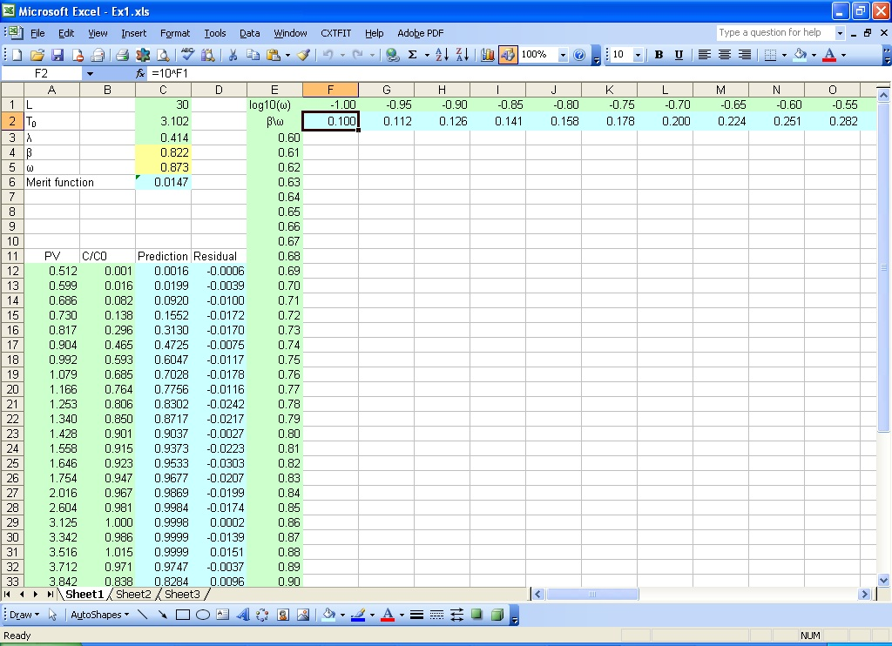
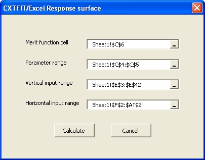
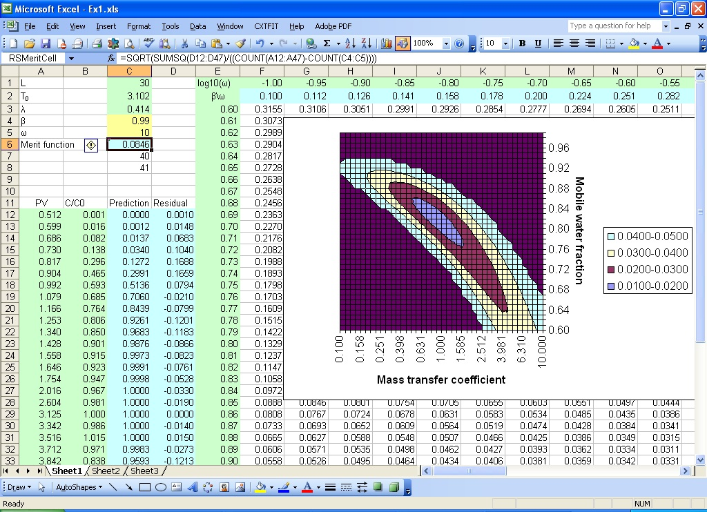

Section 7: Response Surface Calculation
Suppose that we use the non-equilibrium convection dispersion model to simulate the data in Section 2, and we want to examine the response surface with respect to the mobile water fraction (β) and mass transfer coefficient (ω).- Set up the merit function and values β and ω
- Calculate response surface
- Plot contour
- Calculate response surface with different λ values
At first, we set up the problem with merit function following Step 1 and Step 2 in Section 6 (Fig. 7.1). Then we input values from 0.60 to 0.99 in column E for β, -1 to 1 for log10(ω), and formula =10^F1 in cell F2, and extend the formula from G2 to T2.

Fig. 7.1 Input values for β and ω for response surface calculation
Open Calculate Response Surface dialog by selecting menu CXTFIT->Calculate response surface... to open the dialog (Fig. 7.2);
Select the merit function cell, parameter range, vertical input range, and horizontal input range (Fig. 7.2)
Press Calculate button to conduct the calculation.

Fig. 7.2 Response surface calculation dialog
Consult Excel help files for help.
Make a copy of the resulting sheet from the previous steps (see Step 1 and Fig. 3.1 in Section 3).
Change λ value in cell C3.
Open Calculate Response Surface dialog by selecting menu CXTFIT->Calculate response surface... to open the dialog (Fig. 8.2), and click button Calculate.
This step can be repeated for a number of &lambda values to calculate RMSE for three parameters. A 3D contour can be plotted in graphic software with this data.
Note as more rows or columns are added, the calculation can be performed incremently by selecting only the added rows and/or columns to save computational time.

Fig. 7.3 Contour for response surface